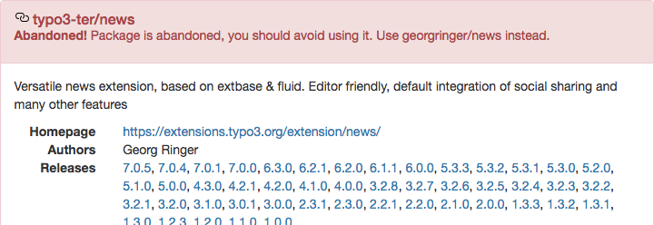
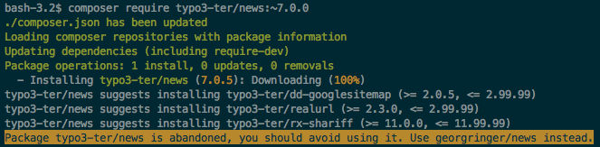

Migration Steps¶
Delete Files¶
Yes, that’s true. You have to delete some files, because they will be created by Composer in some of the next steps.
You have to delete, public/index.php, public/typo3/ and all the
extensions inside public/typo3conf/ext/, you downloaded from TER or any
other resources like GitHub. You even have to delete your own extensions, if
they are available in a separate Git repository and, for example, included as
Git submodule.
Please keep only your sitepackage extension or any other extension, which was explicitly built for your current project and does not have an own Git repository.
Configure Composer¶
Create a file with name composer.json in your project root, not inside
your web root. At the moment, only these few lines are required:
{
"repositories": [
{
"type": "composer",
"url": "https://composer.typo3.org/"
}
]
}
Note, that you only need to include this Composer repository, if you have to use legacy extensions that are not available on Packagist, but only in TER.
Add All Required Packages to Your Project¶
You can add all your required packages with the Composer command composer
require. The full syntax is:
composer require anyvendorname/anypackagename:version
Example:
composer require typo3/minimal:^9.5
There are different ways to define the version of the package, you want
to install. The most common syntaxes start with ^ (e.g.
^9.5) or with ~ (e.g. ~9.5.0). A full documentation can be
found at https://getcomposer.org/doc/articles/versions.md
In short:
^9.5or^9.5.0tells Composer to add newest package of version 7.* with at least 9.5.0, but not version 10.~9.5.0tellscomposerto add the newest package of version 9.5.* with at least 9.5.0, but not version 9.6.
You have to decide by yourself, which syntax fits best to your needs.
Install the Core¶
The Old Way: Add Everything¶
As already written above, the line to install TYPO3 7 LTS would be:
composer require typo3/cms:~7.6.0
Add only code you need¶
Since TYPO3 8.7.10 you should only add code you need, thus require individual
TYPO3 core extensions instead of the full typo3/cms package, like it was necessary
for TYPO3 7.6 or older. It is mandatory to do so for TYPO3 9 LTS.
The concept means, you will not copy
the full TYPO3 core package, including all system extensions, you will
never use. But only install what you really want. You will not be able
to install typo3/cms:^9, but have to name each system extension:
composer require typo3/minimal:^9.5
composer require typo3/cms-scheduler:^9.5
composer require ...
Or in one line:
composer require typo3/cms-minimal:^9.5 typo3/cms-scheduler:^9.5 ...
To find the correct package names, you can either take a look in the
composer.json of any system extension or follow the naming
convention
typo3/cms-<extension name with dash "-" instead of underscore "_">,
e.g. typo3/cms-fluid-styled-content.
Note
To find out all TYPO3 Core packages, you can visit the TYPO3 Composer Helper website. https://get.typo3.org/misc/composer/helper From this website, you can select TYPO3 Core Packages you need and generate the composer command to require them.
Install Extensions from Packagist¶
You already know the TER and always used it to install extensions? Fine. But with Composer, the preferred way is to install extensions directly from packagist.org. This works great, when the maintainer uploaded them to there. Many well known extensions are already available. You only need to known the package name. There are multiple ways to find it:
Notice on Extension’s TER Page¶
Extension maintainers optionally can link their TYPO3 extension in TER with the correct Composer key on packagist.org. Some maintainers already did that and if you search the extension in TER, you will see a message, which command and Composer key you can use to install this extension.
{kind=link}
Note
The command composer req is short for composer require. Both commands
exactly do the same and are interchangeable.
Check in TER Satis¶
If you search the extension in https://composer.typo3.org/satis.html and it’s linked to packagist.org, they are marked as “abandoned” and you will see a message, which Composer key should be used to install this extension.

See Warning During composer require Command¶
If you still install one of the abandoned extensions via its typo3-ter package key,
you will also see a warning during the composer require command.

Check Manually¶
This is the most exhausting way. But it will work, even if the extension maintainer does not provide additional information.
Search and open the extension, you want to install, in TER.
Click button “Take a look into the code”.
Open file
composer.json.Search for line with property
"name", it’s value should be formatted likevendor/package.Check, if the package can be found on packagist.org.
{kind=link}
{kind=link}
{kind=link}
{kind=link}
Example: To install the mask extension in version 4.1.*, type:
composer require mask/mask:~4.1.0
Install Extension from TER¶
If the extension is not available on packagist, the good news is: All
TER extensions are available via Composer! That’s, why we added
https://composer.typo3.org/ as repository to our composer.json
some lines above. There are little naming conventions:
- Vendor name is
typo3-ter. - Underscores
_are replaced by dash-.
Example:
The extension any_fancy_extension’s auto generated Composer package
name would be typo3-ter/any-fancy-extension. To add this extension in
version 1.2.*, type:
composer require typo3-ter/any-fancy-extension:~1.2.0
You can browse all available extensions and versions via https://composer.typo3.org/satis.html.
Note
If you do not include any packages this way, you can remove the
repository block named https://composer.typo3.org from your
composer.json to improve speed.
Install Extension from Version Control System (e.g. GitHub, Gitlab, …)¶
In some cases, you will have to install a TYPO3 extension, which is not available on packagist.org or in the TER. Examples could be:
- non-public extension only used by your company.
- you forked and modified an existing extension.
As first step, you have to define the repository in your
composer.json’s “repositories” section. In this example, you find the
additional lines added to the composer.json from above:
{
"repositories": [
{
"type": "composer",
"url": "https://composer.typo3.org/"
},
{
"type": "vcs",
"url": "https://github.com/foo/bar.git"
}
],
"extra": {
"typo3/cms": {
"cms-package-dir": "{$vendor-dir}/typo3/cms",
"web-dir": "public"
}
}
}
The Git repository must be a TYPO3 extension, with all the required
files (e.g. ext_emconf.php) and must contain a valid
composer.json itself. How this file should look in your extension,
can be found on composer.typo3.org or
this blog post from Helmut Hummel.
Please note, that Git tags are used as version numbers.
If you fulfill these requirements, you can add your extension in the same way like the other examples:
composer require foo/bar:~1.0.0
Include Individual Extensions like Site Packages¶
It’s not necessary to move your project’s site package to a dedicated
Git repository to re-include it in your project. You can keep the files
in your main project (e.g. public/typo3conf/ext/my_sitepackage). There is
only one thing to do; Because TYPO3’s autoload feature works differently
in Composer based installations, you have to register your PHP class
names in Composer. This is very easy when you use PHP namespaces:
"autoload": {
"psr-4": {
"VendorName\\MySitepackage\\": "public/typo3conf/ext/my_sitepackage/Classes/",
"VendorName\\AnyOtherExtension\\": "public/typo3conf/ext/any_other_extension/Classes/"
}
}
For extension without PHP namespaces, this section has to look a bit differently. You can decide by yourself, if you want to list each PHP file manually or if Composer should search for them inside a folder:
"autoload": {
"classmap": [
"public/typo3conf/ext/my_old_extension/pi1/",
"public/typo3conf/ext/my_old_extension/pi2/class.tx_myoldextension_pi2.php"
]
}
To complete our example composer.json, it would look like this:
{
"repositories": [
{
"type": "composer",
"url": "https://composer.typo3.org/"
},
{
"type": "vcs",
"url": "https://github.com/foo/bar.git"
}
],
"extra": {
"typo3/cms": {
"cms-package-dir": "{$vendor-dir}/typo3/cms",
"web-dir": "public"
}
},
"autoload": {
"psr-4": {
"VendorName\\MySitepackage\\": "public/typo3conf/ext/my_sitepackage/Classes/",
"VendorName\\AnyOtherExtension\\": "public/typo3conf/ext/any_other_extension/Classes/"
},
"classmap": [
"public/typo3conf/ext/my_old_extension/pi1/",
"public/typo3conf/ext/my_old_extension/pi2/class.tx_myoldextension_pi2.php"
]
}
}
Note
If you want to keep your typo3conf/ext directory empty and autoload information only
in extensions’ composer.json, but not in your project’s composer.json,
there is an alternative way to include your individual extensions in the chapter
completely clear “typo3conf/ext” folder
in the Best practices section.